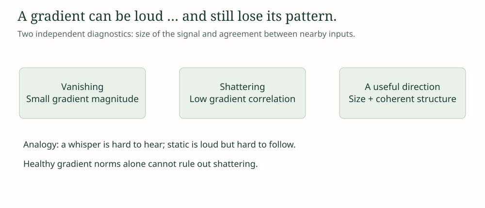
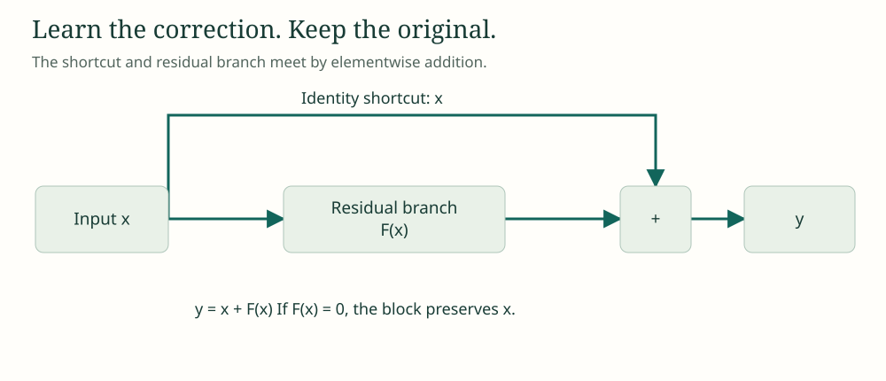
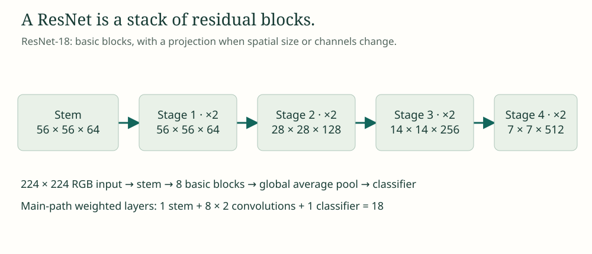
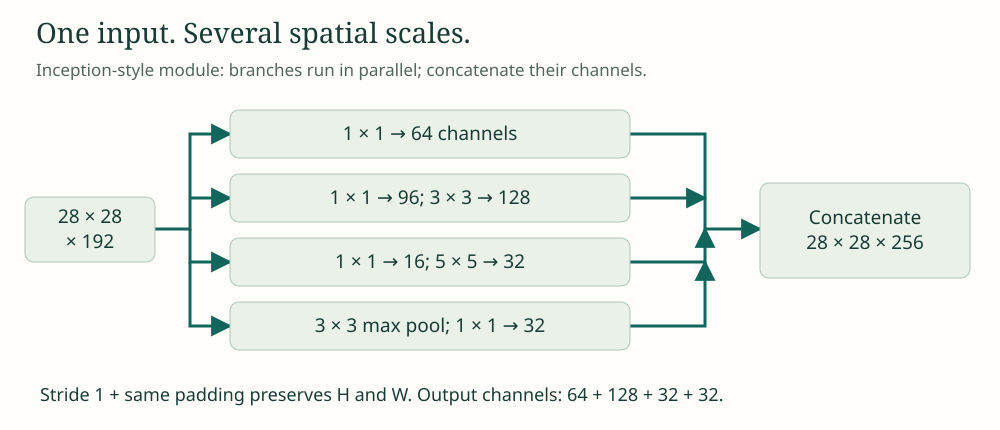
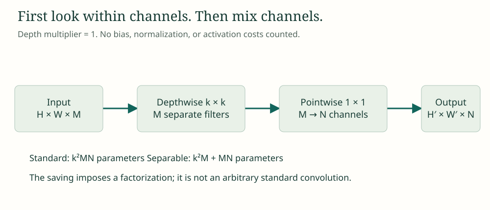

{kind=link}
Reveal reasoning
Shattering: low correlation. A healthy RMS rules out small magnitude in this illustration, not incoherence.
THE NEXT CHAPTER / AFTER BASIC CONVOLUTIONS
More layers. More ways to see.
Less wasted computation.
THE MYSTERY
We already know how to convolve, initialize weights, and backpropagate. Today we discover why those ingredients are not enough—and how the wiring of a network changes what it can learn and what it costs.
Can a strong gradient still be unhelpful?
Can one layer inspect several scales?
Can we separate looking from mixing?
Your mission: by the end, justify an architecture choice, trace tensor shapes through a shortcut or branch, and calculate the cost of a cheaper convolution.
You should know the chain rule, ReLU, convolution padding/stride, and channels. Shapes here use H × W × C (height, width, channels), with the batch dimension omitted. Convolution weight counts exclude biases and normalization. A feature map is a grid of learned responses, not necessarily a raw image.
THE SHATTERED GRADIENTS PROBLEM
You fixed initialization. The gradients have healthy norms. Yet making the network deeper still makes optimization difficult. What did the gradient-norm check miss?
Swipe the diagram sideways to inspect every label.

Imagine asking for directions on a radio. A whisper is a magnitude problem; loud static is a coherence problem. In deep rectifier networks, nearby inputs can trigger different activation paths. Their gradients can become increasingly decorrelated. This is distinct from vanishing or exploding gradients.
We need routes that preserve structure as well as scale. A shortcut will give information a path that does not pass through every learned transformation. First, separate “small” from “incoherent” in the experiment below.
f is the network output; δ is a small input displacement. Correlation here is a statistic across an ensemble or a collection of paired gradient samples, not a correlation computed from one scalar pair.
For a plain network, the input Jacobian is a product of layer Jacobians. In a ReLU network these contain both weights and input-dependent activation gates. Changes in gates across nearby inputs can destroy correlation as depth grows, even when gradient variance remains controlled.
Do not confuse three diagnoses: vanishing means small magnitudes, exploding means large magnitudes, and shattering means loss of correlation structure. These can coexist. A noisy minibatch gradient is a different source of variability.
The original analysis studies gradient statistics under particular random-network assumptions. Its decay laws are not universal guarantees for all architectures or training states. ResNet appeared before this analysis; shattering is a later explanation of one difficulty shortcuts can help address.
PREDICT → CHANGE ONE THING → EXPLAIN
Predict: can the gradient RMS stay at 1 while nearby-input agreement falls?
Controlled synthetic illustration, not a neural-network training run. Depth sets the chosen correlation ρ = exp(−(depth−1)/8); two zero-mean, orthogonal unit-RMS patterns are mixed to isolate correlation from magnitude. This chosen decay constant is not a measured law.
Shattering: low correlation. A healthy RMS rules out small magnitude in this illustration, not incoherence.
Positive rescaling changes magnitude, but leaves correlation unchanged. Making static louder does not recover a shared direction.
RESIDUAL CONNECTIONS
Suppose a useful representation is already available. Why force two new layers to recreate it before they can improve it?
Swipe the diagram sideways to inspect every label.

Think of revising a good paragraph. You keep the original and learn an edit. If the desired mapping is H(x), the residual branch learns F(x) = H(x) − x. The block outputs the original plus that correction.
With equal tensor shapes, y = x + F(x) introduces an identity contribution to the Jacobian. The backward signal has a direct route as well as a learned route. It can still cancel or grow; a shortcut is not a guarantee of perfect gradients.
I is the identity matrix. J is a Jacobian: output derivatives with respect to input. Addition is elementwise and requires matching height, width, and channels.
Differentiating x gives I; differentiating F gives JF. The chain rule gives the backward expression above. Across a stack, each residual block contributes a factor I + JF instead of only JF.
In an original post-activation ResNet block, the output is ReLU(x + F(x)); the ReLU gate also appears in its derivative. The identity expression above refers to the addition before that activation. Pre-activation designs organize the activations differently.
If dimensions change, use a compatible projection P(x), commonly a 1 × 1 convolution with the needed stride. Then y = P(x) + F(x) and Jy = JP + JF; the shortcut is no longer an identity.
Numerical example: x = [2, −1], F(x) = [0.5, 0.2] gives [2.5, −0.8] before ReLU. After ReLU it becomes [2.5, 0].
PREDICT → CHANGE ONE THING → EXPLAIN
Try: set a to 0, then −1. What does the shortcut preserve, and when does it cancel?
Exact scalar calculation, x = 2, upstream gradient = 1; no activation after addition. This isolates the shortcut contribution.
y = x. The residual branch can make no edit while preserving the input.
dy/dx = 1 − 1 = 0. The two paths can cancel; the identity term does not guarantee nonzero gradients.
RESNET
One shortcut works when shapes match. But a vision network must shrink its image grids and grow its channels. What happens at the boundary?
Swipe the diagram sideways to inspect every label.

ResNet repeats residual blocks and organizes them into stages. Within a stage, a shortcut often copies the tensor. At a stage transition, the two routes need a common shape—like resizing two transparent overlays before aligning them.
A basic block uses two 3 × 3 convolutions. ResNet-18 uses two such blocks in each of four stages. Deeper variants such as ResNet-50 use bottleneck blocks with 1 × 1, 3 × 3, and 1 × 1 convolutions; “ResNet” names a family, not a single depth.
Original post-activation block shown. k is kernel size, p padding, and s stride (dilation 1). P is identity for equal shapes or a learned projection for a shape change.
Main route: 3 × 3 conv → BN → ReLU → 3 × 3 conv → BN. Add the shortcut, then apply ReLU. At a stage boundary, the first convolution uses stride 2, and the projection shortcut uses 1 × 1, stride 2 (typically followed by BN).
ImageNet ResNet-18: a 7 × 7 stride-2 stem and stride-2 max pool produce 56 × 56 × 64 from a 224 × 224 × 3 image. Four stages contain [2, 2, 2, 2] basic blocks. Global average pooling produces 512 features; a classifier produces the class scores.
The conventional name counts 1 stem convolution + 8 blocks × 2 convolutions + 1 fully connected layer = 18. Shortcut projection convolutions are not included in that naming convention.
Bottleneck: reduce channels with 1 × 1, process spatially with 3 × 3, expand with 1 × 1. ResNet-50 uses [3, 4, 6, 3] bottleneck blocks: 1 + 16 × 3 + 1 = 50.
PREDICT → CHANGE ONE THING → EXPLAIN
Predict: can we add a 56 × 56 × 64 tensor to a 28 × 28 × 128 tensor?
Projection uses stride 1 within the stage and stride 2 at the transition. Parameter counts include convolution weights only, without bias or BN.
A 1 × 1 convolution, stride 2, with 128 output channels maps the shortcut to 28 × 28 × 128. It has 64 × 128 = 8,192 weights, excluding bias and BN.
The conventional count also includes the stem convolution and the final fully connected classifier: 1 + 16 + 1 = 18.
INCEPTION NETWORKS
A small edge, a medium texture, and a broad object pattern can all matter in one image. Which single kernel size should we commit to?
Swipe the diagram sideways to inspect every label.

Think of a team inspecting a photograph through different-sized windows. Inception sends the same feature tensor through parallel branches and combines what they find. A 1 × 1 convolution mixes channels at each position; before a wider kernel, it can reduce the expensive input channel count.
Concatenate the outputs along channels. Unlike residual addition, branches may have different channel counts, but their spatial dimensions must agree. The 1 × 1 reductions act like asking each specialist to work from a compact briefing.
B denotes one branch. P counts convolution weights only. All branches in this example use stride 1 and padding that preserves the 28 × 28 spatial grid.
At each pixel location, a 1 × 1 convolution forms learned linear combinations of the input channels, then an optional activation adds nonlinearity. It sees one spatial location, but all incoming channels. It does not by itself enlarge the spatial receptive field.
For 192 input channels and a 3 × 3 branch with 128 outputs, a direct convolution costs 9 × 192 × 128 = 221,184 weights. Reducing first to r = 96 costs 192 × 96 + 9 × 96 × 128 = 129,024 weights.
A bottleneck is not automatically cheaper: it saves parameters only when r(Cin + k²Cout) < k²CinCout. It also changes the representation and can discard useful information.
The diagram illustrates the original Inception / GoogLeNet style. Later Inception versions change the branch patterns and factorize kernels. Multi-scale here refers to feature processing within one module, not separate resized input images.
PREDICT → CHANGE ONE THING → EXPLAIN
Try: increase the reduction width. Find where a “bottleneck” stops saving weights.
Only the 3 × 3 branch is varied: 192 → r → 128 channels. The four-branch diagram still outputs 256 channels.
A numbered 5 × 5 toy feature map. Highlighting shows spatial support, not a learned filter output.
28 × 28 × 256. Concatenation sums channels and preserves the shared height and width.
No. A standard 1 × 1 convolution mixes all input channels at each spatial position. Depthwise convolution is the operation that keeps channels separate.
DEPTHWISE SEPARABLE CONVOLUTIONS
A standard convolution searches spatial neighborhoods and mixes channels in one operation. Could splitting those jobs make the network much cheaper?
Swipe the diagram sideways to inspect every label.

Imagine a kitchen: first prepare each ingredient separately, then combine them into dishes. Depthwise convolution applies a spatial filter independently to each input channel. Pointwise convolution then mixes those channels to produce new features.
With depth multiplier 1, depthwise filtering keeps M channels. A 1 × 1 pointwise convolution maps M to N. This factorization greatly reduces parameter and multiply–accumulate counts, but constrains the filters we can express.
M input channels; N output channels; k × k spatial kernel. Multiply either parameter count by H′W′ for MACs at the output grid. One MAC is one multiply–accumulate; some FLOP conventions count it as two operations.
For k = 3, M = 32, N = 64: standard has 9 × 32 × 64 = 18,432 weights. Depthwise has 9 × 32 = 288; pointwise has 32 × 64 = 2,048. Total: 2,336, which is about 12.67% of the standard count, or 7.89× fewer.
At 28 × 28 output resolution, that is 14,450,688 versus 1,831,424 MACs. Biases, normalization, activations, and memory traffic are excluded. Fewer MACs do not guarantee the same wall-clock speedup on every device.
Without an intermediate nonlinearity, the effective kernel has the constrained form W[u,v,m,n] = D[u,v,m]P[m,n]. Each input channel uses one spatial pattern across all output channels, scaled by pointwise weights. An arbitrary full convolution need not have this factorization.
Depthwise separable is different from spatially separable (for example 3 × 1 followed by 1 × 3). MobileNet popularized depthwise separable blocks for efficient vision; Xception also builds on the separation of spatial and channel processing.
PREDICT → CHANGE ONE THING → EXPLAIN
Predict: which part will dominate as the output channel count gets large?
Two 3 × 3 input channels, a 2 × 2 all-ones depthwise filter per channel, stride 1, valid padding. Then a pointwise filter with weights [1, −1] produces one channel. No biases or activations.
Standard: 18,432. Separable: 288 + 2,048 = 2,336. The ratio is 1/64 + 1/9 ≈ 0.1267.
The pointwise 1 × 1 convolution mixes channels. No: the factorization constrains representational capacity, and accuracy must be measured.
06 / BRING THE IDEAS TOGETHER
A mobile vision model has a deep feature extractor that is difficult to optimize, objects appear at several scales, and a 3 × 3 convolution with 64 input and 128 output channels is too expensive.
Inspect correlation of gradients for nearby inputs in addition to magnitude. Use residual blocks, with identity shortcuts for equal shapes and projections where needed. Use Inception-style parallel branches with equal H and W, concatenating channels. For the expensive convolution: standard = 9 × 64 × 128 = 73,728 weights; separable = 9 × 64 + 64 × 128 = 8,768, about 8.41× fewer. This constrains filters, and actual accuracy and latency need measurement. These ideas can be combined; they address different constraints.
| Problem | Idea | Operation to remember | Watch out for |
|---|---|---|---|
| Decorrelation with depth | Preserve useful routes | Gradient correlation, not only norm | Shattering ≠ vanishing |
| Hard to learn a useful change | Residual connection | x + F(x) | Shapes, cancellation, activation gates |
| Scale residual learning | ResNet stages | Repeated blocks + projections | Basic vs bottleneck blocks |
| Several feature scales | Inception branches | Concatenate channels | Equal spatial sizes; branch cost |
| Expensive spatial/channel mixing | Depthwise + pointwise | k²M + MN | Expressivity and device latency |
{kind=link}
{kind=link}
{kind=link}
{kind=link}